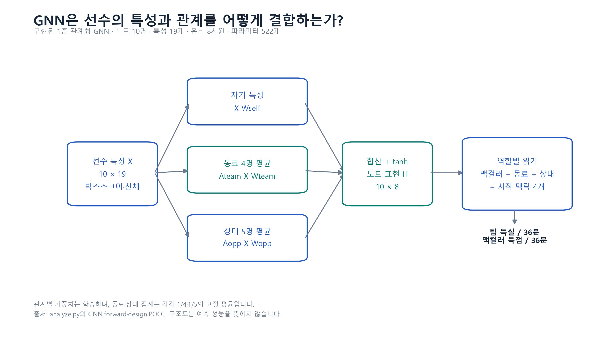
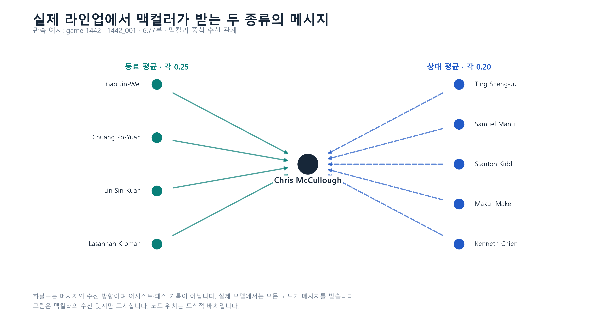
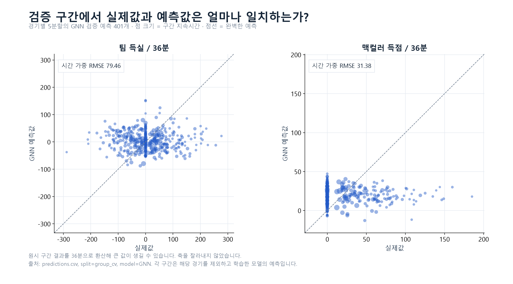
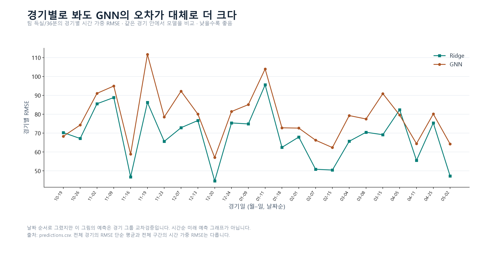
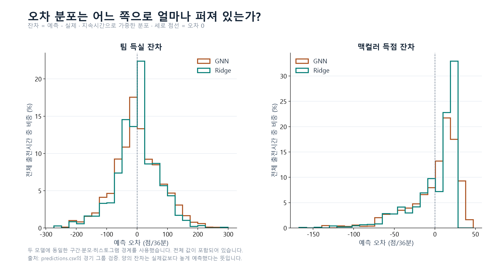
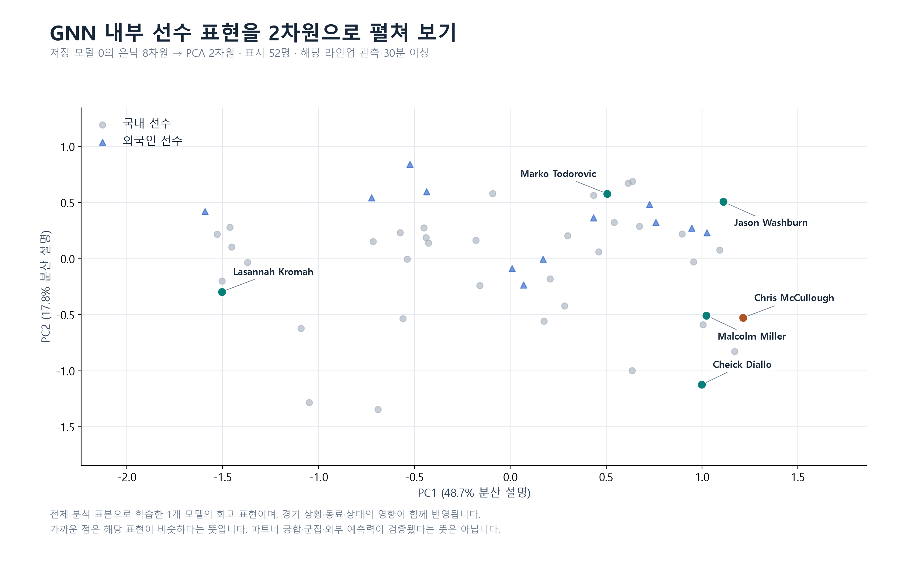
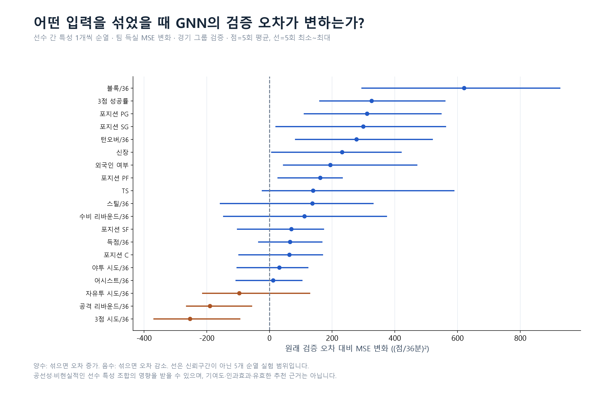
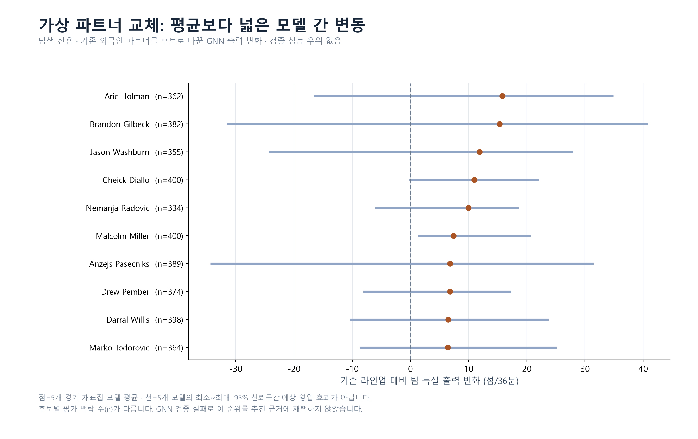
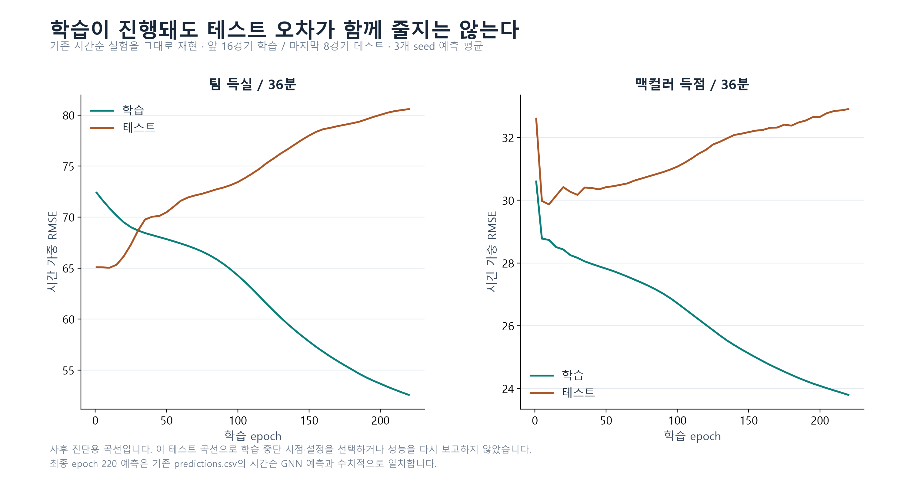

GNN을 살펴보는 9가지 그림
구조 · 검증 · 내부 표현 · 민감도 · 가상 실험. 각 PNG를 클릭하면 원본 크기로 볼 수 있습니다.
GNN은 선수의 특성과 관계를 어떻게 결합하는가?

관계별 가중치는 학습하며, 동료·상대 집계는 각각 1/4·1/5의 고정 평균입니다.
출처: analyze.py의 GNN.forward·design·POOL. 구조도는 예측 성능을 뜻하지 않습니다.
PNG · SVG실제 라인업에서 맥컬러가 받는 두 종류의 메시지

화살표는 메시지의 수신 방향이며 어시스트·패스 기록이 아닙니다. 실제 모델에서는 모든 노드가 메시지를 받습니다.
그림은 맥컬러의 수신 엣지만 표시합니다. 노드 위치는 도식적 배치입니다.
PNG · SVG검증 구간에서 실제값과 예측값은 얼마나 일치하는가?

원시 구간 결과를 36분으로 환산해 큰 값이 생길 수 있습니다. 축을 잘라내지 않았습니다.
출처: predictions.csv, split=group_cv, model=GNN. 각 구간은 해당 경기를 제외하고 학습한 모델의 예측입니다.
PNG · SVG경기별로 봐도 GNN의 오차가 대체로 더 크다

날짜 순서로 그렸지만 이 그림의 예측은 경기 그룹 교차검증입니다. 시간순 미래 예측 그래프가 아닙니다.
출처: predictions.csv. 전체 경기의 RMSE 단순 평균과 전체 구간의 시간 가중 RMSE는 다릅니다.
PNG · SVG오차 분포는 어느 쪽으로 얼마나 퍼져 있는가?

두 모델에 동일한 구간·분모·히스토그램 경계를 사용했습니다. 전체 값이 포함되어 있습니다.
출처: predictions.csv의 경기 그룹 검증. 양의 잔차는 실제값보다 높게 예측했다는 뜻입니다.
PNG · SVGGNN 내부 선수 표현을 2차원으로 펼쳐 보기

전체 분석 표본으로 학습한 1개 모델의 회고 표현이며, 경기 상황·동료·상대의 영향이 함께 반영됩니다.
가까운 점은 해당 표현이 비슷하다는 뜻입니다. 파트너 궁합·군집·외부 예측력이 검증됐다는 뜻은 아닙니다.
PNG · SVG어떤 입력을 섞었을 때 GNN의 검증 오차가 변하는가?

양수: 섞으면 오차 증가. 음수: 섞으면 오차 감소. 선은 신뢰구간이 아닌 5개 순열 실험 범위입니다.
공선성·비현실적인 선수 특성 조합의 영향을 받을 수 있으며, 기여도·인과효과·유효한 추천 근거는 아닙니다.
PNG · SVG가상 파트너 교체: 평균보다 넓은 모델 간 변동

점=5개 경기 재표집 모델 평균 · 선=5개 모델의 최소~최대. 95% 신뢰구간·예상 영입 효과가 아닙니다.
후보별 평가 맥락 수(n)가 다릅니다. GNN 검증 실패로 이 순위를 추천 근거에 채택하지 않았습니다.
PNG · SVG학습이 진행돼도 테스트 오차가 함께 줄지는 않는다

사후 진단용 곡선입니다. 이 테스트 곡선으로 학습 중단 시점·설정을 선택하거나 성능을 다시 보고하지 않았습니다.
최종 epoch 220 예측은 기존 predictions.csv의 시간순 GNN 예측과 수치적으로 일치합니다.
PNG · SVG